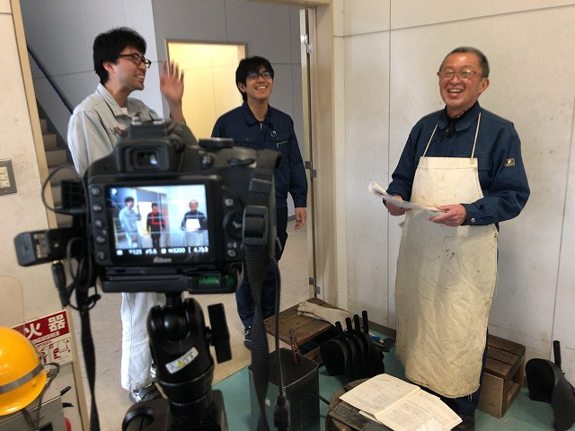
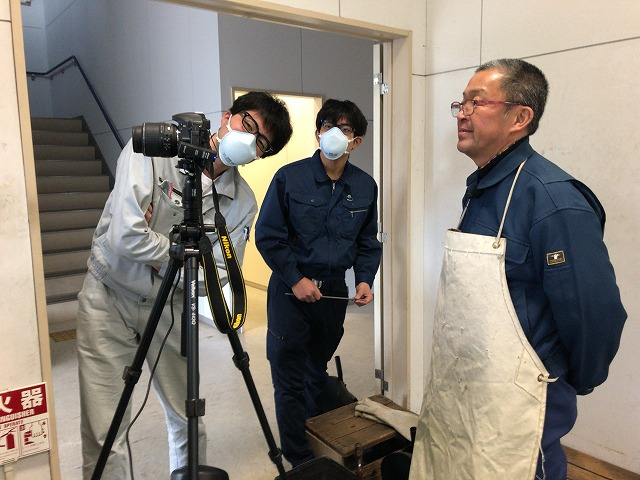
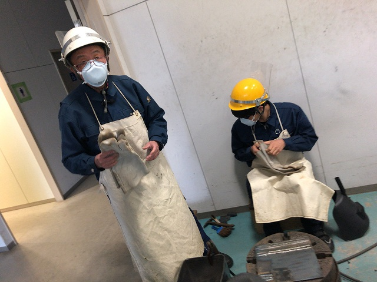
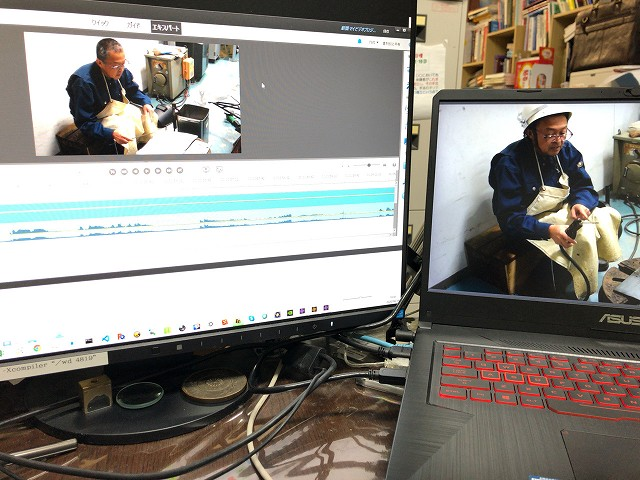
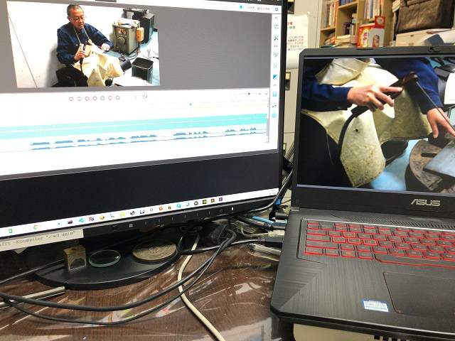
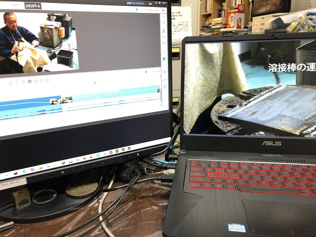

| ・ 溶接2 (R02.04.11) | |||
若い技官さん2人を生徒役にして再収録。川崎さん曰く、「やっぱり相手がいないとやりにくいし、観ている方も実感湧かないとおもうわ」。 教師と生徒のやりとりはガリレオの天文対話以来のフォーマットです。さすがベテランの川崎さん。准教授の人も勉強になったとのこと。 |
|||
|

楽しそう |

収録内容確認 | ||
|

いろいろアイデアも出ました |

編集ソフト導入 | ||
|

編集楽しい |

あとで計測研の学生さんからも意見取り入れました | ||
|
撮られると緊張するとのことでした |
|||